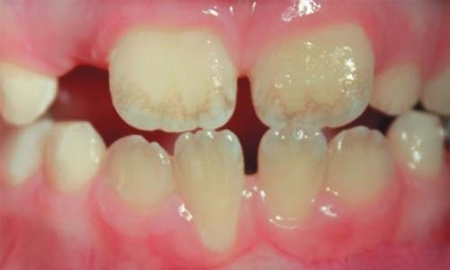
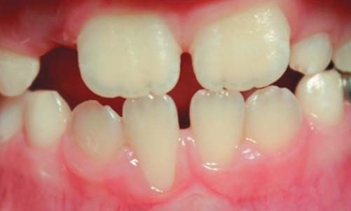
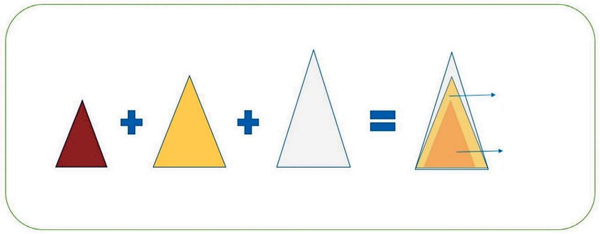
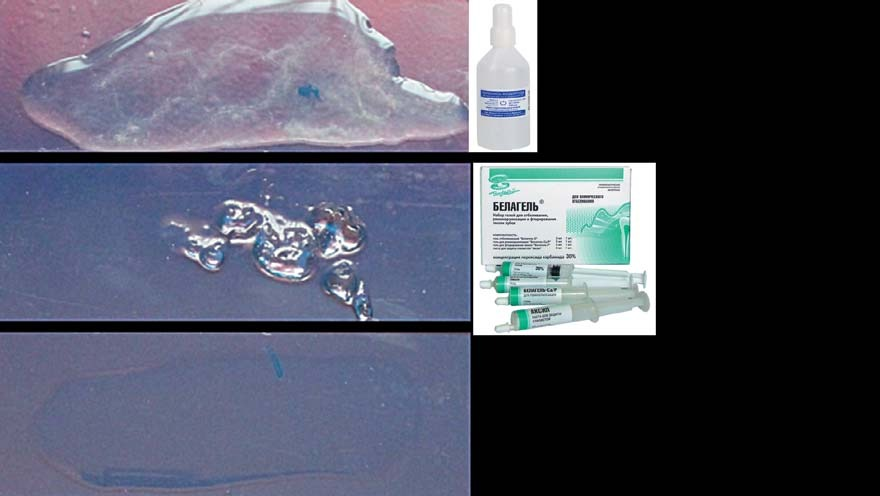
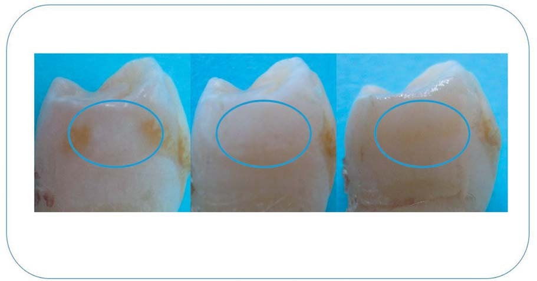
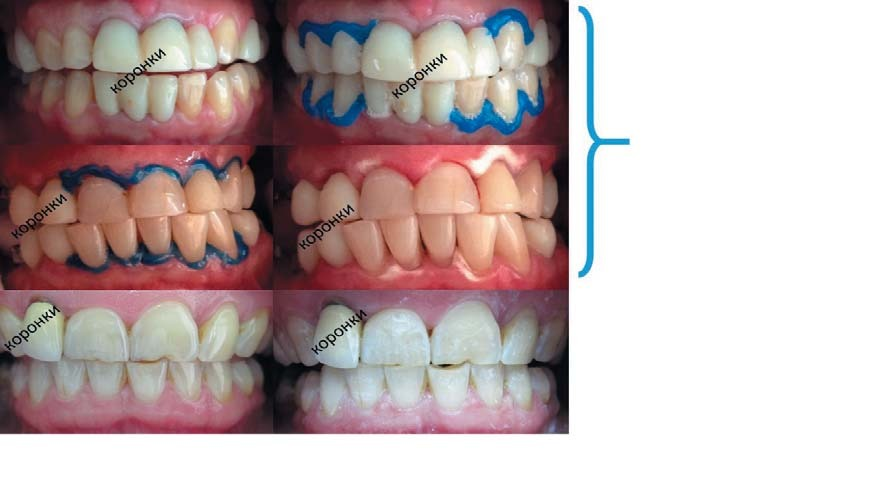
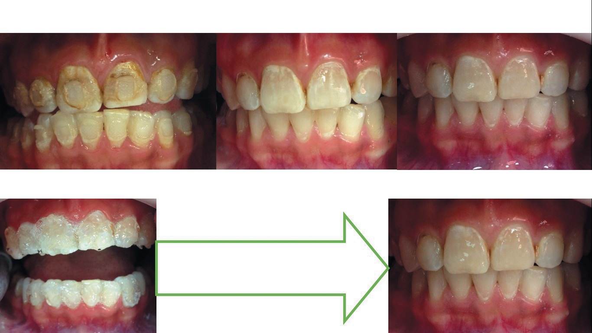

Практика · журнал «ДентАрт» 2016 №2
Професійне відбілювання зубів. Аспекти кольору
PROFESSIONAL TEETH WHITENING. ASPECTS OF COLOUR
Сьогодні існує безліч методик, що дозволяють провести відбілювання зубів. Слід наголосити на необхідності професійної гігієни порожнини рота до процедури відбілювання зубів, механічного полірування тканин емалі після проведення відбілювання зубів, домашньої ремотерапії, яка запобігає швидкій пігментації фарбувальними харчовими агентами. Також за наявності патології печінки пацієнтові паралельно з гігієнічними процедурами слід призначити гепатопротектори і детоксиканти, що значно підвищує якість і стабільність результату професійного відбілювання.
Сучасна успішна людина не уявляє собі життя без білосніжної, привабливої для спілкування усмішки. Сьогодні в арсеналі лікаря-стоматолога існує безліч методик, що дозволяють створити усмішку мрії. Також на перший план виходить культ здорового і довгого життя, що диктує свої вимоги до безпеки процедури і тривалої стабільності результату відбілювання. Виходячи зі сказаного, слід зазначити, що лікар-стоматолог часто стоїть на роздоріжжі часом нелегкого вибору між наявними можливостями, бажаннями пацієнта і можливістю передбачити результат проведених маніпуляцій.
Відбілювання (білення) — це хімічна обробка того чи іншого матеріалу, що усуває (небажане) забарвлення для додання йому білого кольору. Слід розуміти, що живі здорові зуби людини, так само, як шкіра, білки очей і колір слизових оболонок, мають два види відтінку: холодні (сіруваті) і теплі (жовтуваті). Відомо, що зубу відповідає явний перехід кольору і прозорості від ріжучого краю до пришийкової зони. Перехід кольору забезпечується товщиною, прозорістю тканин і здатністю відбивати світло.
Індивідуальний природний колір зубів головним чином визначається дентином, але на нього впливають колір, прозорість, товщина і ступінь мінералізації емалі (рис. 1). Сіро-блакитний відтінок емалі доповнюється кольором підлеглого дентину, який може варіювати від жовтого до коричневого. Так формуються різні колірні варіанти норми. Відповідно, відтінок зуба (сіро-блакитний або жовтий) залежить від товщини зазначених шарів і ступеня їх прозорості, яка, у свою чергу, спирається на якість мінералізації. При цьому необхідно пам'ятати про загальносоматичну патологію, здатну вплинути на пігментацію як шкіри, слизових оболонок, так і тканин зуба (дискінезія жовчовивідних шляхів, жовтяниці, патологія сечостатевої та травної систем) (фото 1, 2).


Фото 1, 2. Клінічний випадок освітлення емалі пацієнта С., 5 років, з дискінезією жовчовивідних шляхів. Освітлення провадилося шляхом механічної обробки конусною щіточкою і сухою полірувальною пастою.
Під час загибелі пульпи зуба і відсутності активних обмінних процесів твердих тканин в дентині відбувається кристалізація продуктів обміну і, як наслідок, зміна його тону і прозорості. Знаючи природу формування кольору і тону коронки зуба, нескладно передбачити заходи їх зміни в бік освітлення. З точки зору фізики кольору, його можна змінити, додавши поверхневому шару щільності, або знизивши ступінь його прозорості, або змінивши ступінь прозорості середнього шару із заміною опаковим білим матеріалом. Такі підходи ми бачимо в сучасній стоматології.

Рис. 1. Причина формування коричневого відтінку в пришийковій зоні і жовтого — у коронковій.
Чому ж відбілювання емалі вітальних зубів вважається «шкідливою» процедурою? Відповідь на це запитання криється в методиках хімічної реалізації законів фізики світла, точніше, це може відбутися двома шляхами:
- відбілювальний агент руйнує хімічні зв'язки молекули хромофору (ненасичені групи атомів, які обумовлюють колір хімічної сполуки);
- відбілювальний агент модифікує подвійний хімічний зв'язок в одинарний таким чином, що хромофор перестає поглинати видиме світло.
До хромофорів відносять азогруппу –N=N–, нітрогрупу –NO₂, нітрозогруппу –N=O, карбонільну групу =С=, пов'язані системи подвійних зв'язків, хіноїдні угруповання та ін. Введення інших груп, званих ауксохромами (ОН, —NH₂ та ін.), сприяє поглибленню забарвлення.
Саме тому відбілювання у стоматології часто роблять препаратами перекису водню і вважають його небезпечним, бо цей метод руйнує хімічні зв'язки амінокислотних елементів зуба, які, у свою чергу, є матрицею мінералізації. Це спостереження підтверджене дисертаційною роботою Поповкіної О.А. (2006). Цей метод дає зниження прозорості шару емалі за рахунок «розпушення» її тканини і збільшення міжхвостової відстані в емалевих призмах. При цьому змінюється заломлення пучка світла, що падає на поверхню емалі, збільшується його розсіювання, а відтак коронка зуба освітлюється.
Дуже цікавою є необхідність ремінералізації тканин емалі після такого агресивного впливу. Однак при нанесенні препаратів, що «склеюють» хвостові частини емалевих призм, ми будемо мати справу зі швидким поверненням вихідного світлозаломлювання емалі через підвищення її щільності і, як наслідок, — світлозаломлювання на глянцевій поверхні. Особливо актуальна ця проблема при ремінералізації іонами фтору, які, як відомо, мають великий розмір молекул і часто розташовуються в кристалах хаотично, що призводить до появи «лимонного» відтінку емалі зуба.

Рис. 2. Перекис водню 3% рідкий, експозиція 5 хв — Белагель 30% ВладМіВа, експозиція 5 хв — Контроль, яєчний білок, експозиція 5 хв.
Виходячи із сказаного і того, що пацієнтів дуже турбує відсоток перекису у відбілювальній системі, ми провели дуже простий експеримент, який легко можна повторити біля крісла пацієнта, тим самим визначивши ступінь агресивності процедури.
Хід експерименту: помістити невелику кількість сирого яєчного білка на три предметні скельця. На перше скло в яєчний білок внесли краплю 3% перекису водню, на друге в яєчний білок внесли 30% відбілювальну систему Белагель фірми «ВладМіВа», третє — контроль (нічого не додаємо). Через п'ять хвилин, оцінивши результати, ми побачили, що не так важливий процентний склад пероксиду, як його форма — водна чи гелева і наскільки цей гель гідрофобний. На склі з 3% пероксидом видно нитки денатурованого білка, в той час як на склі з Белагелем якість органіки істотно не змінилася. Цей простий спосіб гарний при виборі відбілювальної системи і при демонстрації пацієнтові безпеки процедури. Тим самим ми визначаємо ступінь освітлення (зміни щільності і кольору білкової матриці) та агресивність компонентів системи.

Фото 2. Світлові ефекти під час відбілювання та фторування емалі безбарвним гелем. До відбілювання. Після відбілювання 30% H₂O₂. Після фторування.
Для вирішення цієї проблеми багато вчених робили чимало спроб зменшення і зміни форми молекул фтору для стабілізації світлозаломлювання. Цікаво, що найбільш вдале рішення можна знайти у відбілювальних системах компанії «ВладМіВа», в які для ремінералізації внесено гель Белагель Ca/P. Відомо, що кальцієві солі мають різко матовий білий колір, а фосфор гармонізує процес ремінералізації. Тому часто пацієнти, які застосовують цей комплекс для відбілювання в кріслі стоматолога (Белагель для клінічного відбілювання) і домашній курс ремінералізації (Белагель Ca/P) та дотримуються необхідного режиму харчування, відзначають додаткове освітлення зубів протягом тижня після процедури (фото 3).

Фото 3. а) ефект зміни світлозаломлювання при відбілюванні 30% пероксидом з подальшим фторуванням прозорим фтористим гелем in vitro; б) порівняльний ефект зміни світлозаломлювання при відбілюванні 30% пероксидом з подальшою ремінералізацією гелем Ca/P in vivo. Зарубіжний аналог системи професійного відбілювання Белагель О: пацієнти відзначили високу ступінь болючості процедури, високий ризик опіку слизової оболонки, незважаючи на додатковий захист рабердамом. Система професійного відбілювання Белагель О Лайт (ВладМіВа): пацієнти відзначили безболісність процедури, привертає увагу висока ступінь освітлення пришийкових ділянок, не потрібне використання рабердаму.
Досить складним вважається відбілювання зубів, уражених флюорозом, після зняття брекет-системи, особливо при поганій гігієні ротової порожнини. У першому випадку флюорозний дисколорит виражений настільки сильно, що щадними методиками освітлити тканини зубів складно. Зазвичай для зазначених цілей застосовують кислотне освітлення емалі. У другому випадку зуби мають вкрай ослаблену емаль на тлі поганої гігієни і підвищеної пористості після року-двох носіння системи, але змучені естетичним дефектом пацієнти дуже зацікавлені в якнайшвидшому отриманні не тільки рівних, а й «білих» зубів. У настільки складних випадках нами була протестована і блискуче себе показала методика двоетапного щадного відбілювання зубів із застосуванням системи професійного відбілювання Белагель О-Вайт (ВладМіВа) (фото 4).

Фото 4. Клінічний випадок пацієнтки А., 26 років. Після зняття брекет-системи, зуби уражені флюорозом. Звертає на себе увагу триваюче освітлення емалі після домашньої ремтерапії гелем Ca/P, висока ступінь освітлення пришийкової зони коронкової емалі і відсутність негативного впливу пероксиду на м'які тканини. Після зняття брекет-системи. Після 1-го етапу хімічного відбілювання Белагель О-Вайт 30% х 15 хв х 2 підходи. Після 7 днів домашнього застосування гелю Ca/P. Друге відвідування (через 14 днів): відбілювання Белагель О-Вайт Лайт 15% х 15 хв х 2 підходи.
Хочеться відзначити природну необхідність в якісній професійній гігієні порожнини рота без застосування фторовмісних паст до процедури відбілювання зубів. Гарний результат дало механічне полірування тканин емалі через 14 днів після проведення відбілювання зубів і 7 днів домашньої ремотерапії гелем Ca/P, яке необхідне для створення гладкої поверхні зуба, глянцевого «сяйва» і запобігання швидкому забрудненню фарбувальними харчовими агентами.
Не варто забувати, що за наявності патології печінки пацієнтові паралельно з гігієнічними процедурами слід призначити гепатопротектори і детоксиканти, що значно підвищує якість і стабільність результату професійного відбілювання.
Висновок
Група препаратів професійного відбілювання Белагель О демонструє високоестетичний результат на тлі комфортного і найбільш щадного застосування, спираючись при цьому на свою незрівнянно приємну вартість. При всебічному розумінні процесів кольороутворення зубів і фізіології організму лікар-стоматолог може задовольнити естетичні вимоги пацієнтів найбільш щадними і фізіологічно виправданими методиками, застосовуючи препарати виробництва компанії «ВладМіВа».
Література
- Ронкин К.З. Современные методы отбеливания зубов / К.З. Ронкин. Бостон: Дентал Калейдоскоп, 2002.
- Скрипников П.Н. Отбеливание зубов / П.Н. Скрипников, Н.С. Мухина. Полтава, 2002. 64 с.
- Сахарова Э.Б., Прокушева О.А., Поповкина О.А. «Да» и «нет» отбеливанию зубов. Материалы Х Всероссийской научно-практической конференции. М., 2003. — С. 43-46.